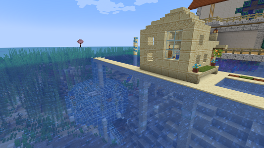
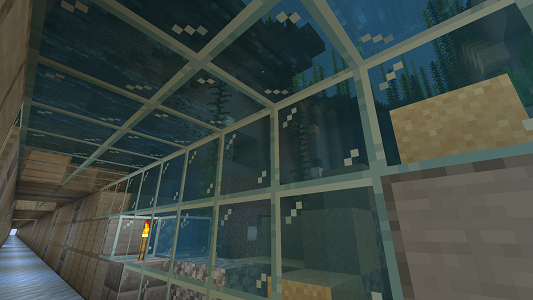

施設建物紹介
#tug_00 月雲ハウス

| build data | 2024/11/01 | 座標 | x:____ y:____ z:____ |
|---|
島南岸に現れた月雲の家。周囲と比べかなり小さいが、その本体は海中にある。位置的にはちょうど 氷ボート海底トンネルの真上に位置し、トンネルと自宅を結ぶ接続路も用意されている。
#tug_01 氷ボート海底トンネルの外周

| build data | 2024/10/10 | 座標 | x:____ y:____ z:____ |
|---|
葱戸が敷設した氷ボート海底トンネルをいたく気に入ってくれたのか、通路の外側…つまり海中の整備を担当。 一見すると見えないような位置に照明を仕込み、通路からの景色をよりよいものへと変えている。
光がとおって見目麗しくなった海底の景色は、ドラウンドに槍衾にされたり溺れたりした月雲の命のぶんだけ美しい。